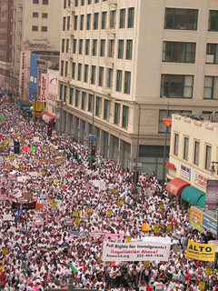

Submitted on Mon, 03/27/2006 - 12:48am
By Mike Hargis, Chicago - Industrial Worker, April 2006
It was so incredible: I never saw the beginning of the march, nor the end. I didn’t hear one speech and never even made it to the Loop where the march was supposed to end. There was just this sea of humanity gathered in the streets, flowing in the same direction with the same object in mind: defeat the new, draconian immigration bill known as “The Border Protection, Antiterrorism, and Illegal Immigration Control Act of 2005” (HR4437).
On March 10 at least 300,000 people took the day off work or school and converged in Chicago’s Loop to protest this bill, which would turn undocumented workers into “aggravated criminal felons” and those who assist them, such as priests and nurses (and unionists) into criminals as well for “aiding and abetting” them. The bill passed the House of Representatives just before Christmas, it is currently being debated in the Senate.
Submitted on Sun, 03/26/2006 - 3:22am
 Disgruntled workers, don't miss the class that will change your life.
Disgruntled workers, don't miss the class that will change your life.
It's the "Introduction to the Industrial Workers of the World".
This interactive workshop draws upon your experiences as a worker to develop a unique perspective on how we go about solving our problems at work and building our power as workers.
Learn about:
- different forms of unionism ("Service Unionism" and "Solidarity Unionism")
- strategies for fighting back on the job (Labor Law & "Direct Action")
- methods for building our power as a class of workers worldwide (Cross-Border Solidarity)
- democratic and participatory traditions ("Rank and File Control")
- and much more!
The 'Introduction class' promises to inspire you, to piss you off, and to arm you to change the way your boss does business.
Submitted on Thu, 03/23/2006 - 6:32pm
By CYDNEY GILLIS - Staff Reporter; reposted from RealChangeNews.Org, March 9, 2006.
 Starbucks settled 15 charges of unfair labor practices in New York Tuesday — a move the Industrial Workers of the World are hailing as a victory in their drive to unionize the coffee’s giants baristas.
Starbucks settled 15 charges of unfair labor practices in New York Tuesday — a move the Industrial Workers of the World are hailing as a victory in their drive to unionize the coffee’s giants baristas.
The Wobblies say Starbucks agreed to reinstate two union members who had lost their jobs — Sarah Bender and Anthony Polanco — and stop interfering with union organizing activities.
The settlement is so complete, says one IWW member, it’s a virtual “neutrality agreement” that sets the stage for the union to expand its efforts.
Submitted on Tue, 03/21/2006 - 9:56pm
By Kris Maher and Janet Adamy, The Wall Street Journal - Tuesday, March 21, 2006
 Unions haven't had much luck organizing Starbucks Corp.'s baristas, many of whom are part-timers or college students with little incentive to sign union cards since they're not planning on building long-term careers brewing venti skim lattes.
Unions haven't had much luck organizing Starbucks Corp.'s baristas, many of whom are part-timers or college students with little incentive to sign union cards since they're not planning on building long-term careers brewing venti skim lattes.
The latest to try to organize the company's workers is the Industrial Workers of the World, a union with a long, feisty history and a counter-cultural aura.
Starbucks recently settled a complaint issued by the National Labor Relations Board that contained more than two dozen unfair labor practice allegations brought against the company by the IWW. The settlement stemmed from disputes at just three stores in New York City and will likely have little impact on the vast majority of Starbucks workers. But it illustrates the careful approach the company is taking toward labor activists as Wal-Mart Stores Inc. and other union targets try to rebuild their images after union campaigns tarnished their reputations.
Submitted on Mon, 03/20/2006 - 3:39am
Disclaimer - The following article is reposted here because it is an issue with some relevance to the IWW. The views of the author do not necessarily agree with those of the IWW and vice versa.
Reposted from www.libcom.org - March 20, 2006
A fresh wave of protests has hit France as students, school pupils and workers continue the occupations, blockades and rioting against the first employment contract (CPE).
This is just a short summary of the events being updated regularly on http://libcom.org/blog - the most comprehensive and up-to-date English coverage of the struggle against the CPE anywhere on the web.
Scores of high schools and around 70% of universities are occupied today.
In many areas teachers have been joining their pupils in the protests, with several thousands demonstrating in Limoges, Boulougne, Le Havre and many other towns and cities across France.
The Monteil school in Rodez, the largest school in Aveyron with 1,600 pupils, was occupied and shut down with barricades. Fifteen schools in Seine-Saint-Denis, the scene of last years riots by suburban youths, are occupied. Many young people from the banlieus are preparing to join in the demonstration in Paris later today. Around 1,000 high school pupils have blocked a motorway in Nice whilst 200 pupils did the same in Vitry-on-Seine.
This is a strong sign that the struggle is circulating and extending outside the universities to France's disaffected working class youth - the focus of mass civil unrest in November last year. The increasing numbers of lecturers and teachers on strike and supporting the protests, and the railway and motorway blockades, along with support from France's major unions, all point to a struggle which is encompassing an ever wider section of France's society.
To keep up-to-date on the events in France, look at http://libcom.org/blog